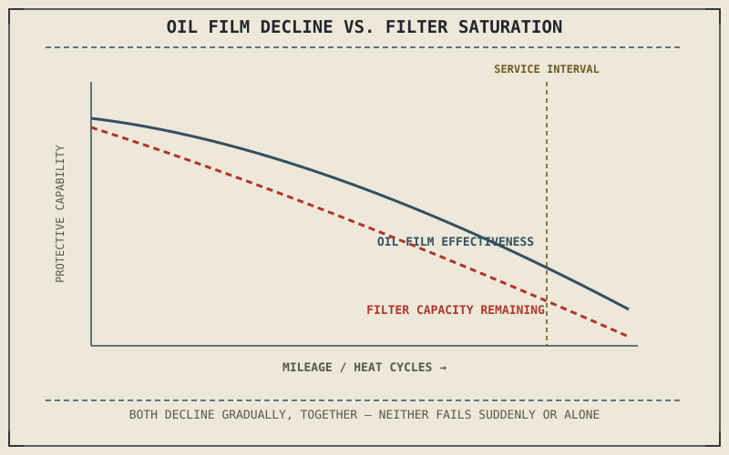

Chapter 2.16 explained lubrication's actual job: maintaining a thin, continuous film between moving metal surfaces inside the engine, preventing the direct metal-to-metal contact that would otherwise generate friction, heat, and rapid wear. Oil doesn't do that job forever — it degrades with heat cycling and combustion byproducts over time, which is the entire reason oil and filter service exists as a scheduled maintenance item rather than a one-time fill.
Chapter 10.2 closed by naming engine oil and filter service as this chapter's subject, the first of this part's deeper periodic services. This chapter covers it.
Why Oil Degrades and Why That Matters Mechanically
Chapter 2.16 described oil forming a protective film between surfaces like the piston and cylinder wall Chapter 2.5 introduced, and that film's effectiveness depends on the oil's viscosity and chemical additives staying within their intended range. Heat cycling breaks down those additives over time, and combustion byproducts — unburned fuel, moisture, and microscopic wear particles — accumulate in the oil the longer it circulates, degrading its ability to maintain that protective film. Old, degraded oil doesn't fail suddenly; it gradually loses the lubricating performance Chapter 2.16 described, which is why a scheduled interval, not a wait-until-it-fails approach, is the correct maintenance model here.
The Filter's Job and Why It's Changed Alongside the Oil
An oil filter captures the wear particles and larger contaminants Chapter 2.16's lubrication system generates as it circulates, preventing them from recirculating through the same close-tolerance surfaces the oil is protecting. Changing the filter at the same time as the oil is standard practice specifically because a saturated filter, left in place with fresh oil, continues releasing previously captured contaminants back into circulation — the fresh oil's protective capability is undermined by a filter that's already reached its own capacity, which defeats much of the point of the service in the first place.
Oil doesn't fail all at once — it gradually loses the protective film capability Chapter 2.16 described as heat and contamination accumulate, which is exactly why oil service runs on a schedule rather than waiting for a visible problem to appear.

A graph showing oil protective film effectiveness declining gradually over accumulated heat cycles and mileage, alongside a filter shown accumulating captured contaminants until reaching saturation at the same service interval.
Reading the Oil Itself as a Diagnostic Signal
Drained oil carries information beyond simply needing replacement: unusually dark, gritty oil suggests more wear-particle generation than expected, and oil with a distinct fuel smell can indicate incomplete combustion reaching the crankcase past the piston rings Chapter 2.5 described. This connects Chapter 10.1's framing of maintenance as a connected system directly to oil service specifically — a routine oil change is also a low-effort opportunity to notice early signs of a developing problem elsewhere in the engine, well before that problem announces itself through a performance change a rider would actually notice while riding.
A Common Misconception, Cleared Up Early
It's a common assumption that any oil meeting a bike's basic specification is functionally interchangeable, treating oil choice as a minor detail. Chapter 2.16 established viscosity and additive package as directly determining how well oil maintains its protective film under the specific heat and load conditions an engine generates — using an oil genuinely outside a manufacturer's specified range, even if it technically fits in the engine, can measurably shorten the protective film's effective life described earlier in this chapter, undermining the scheduled interval's own assumptions about how long that protection actually lasts.
Where This Leads
Oil protects the engine's internal surfaces. The final drive — chain, belt, or shaft — carries that same lubrication principle to an entirely different, external part of the motorcycle. Chapter 10.4 turns to chain and final drive maintenance next.
Key Concepts to Remember
- Oil degrades gradually from heat cycling and combustion byproducts, losing the protective film capability Chapter 2.16 described, which is why service runs on a schedule.
- A saturated oil filter left in place can release previously captured contaminants back into fresh oil, which is why filter and oil are changed together.
- Drained oil's color, texture, and smell can reveal early signs of a developing engine problem beyond simply needing replacement.
Cross-References
| ← Ch. 2.16 | Established lubrication's protective film and viscosity's role in maintaining it; this chapter shows that film degrading over time and needing scheduled renewal. |
| ← Ch. 10.1 | Framed maintenance as a connected system; this chapter shows oil service doubling as a diagnostic signal for problems elsewhere in the engine. |
| → Ch. 10.4 | Covers chain and final drive maintenance, carrying the same lubrication principle to an external part of the motorcycle. |